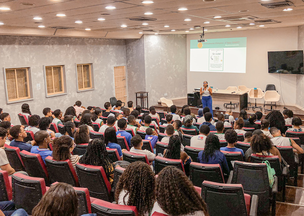
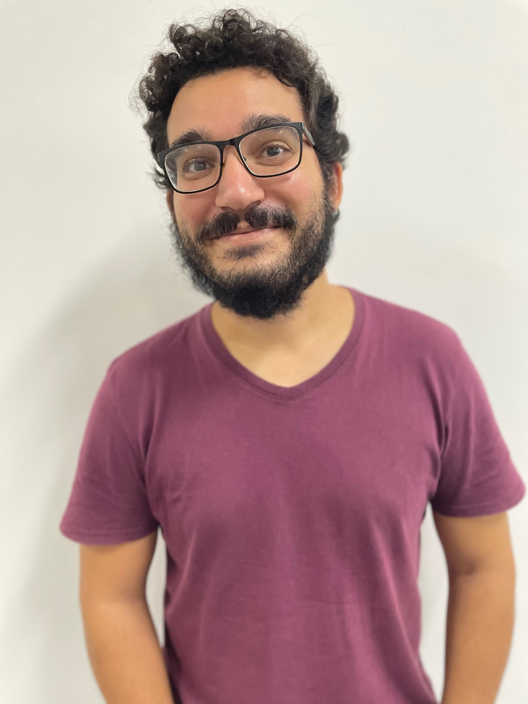

Nesta seção Simpósio faremos uma breve
resenha de eventos organizados por membros da comunidade do Departamento
de Matemática (DMAT) do Instituto de Matemática e Estatística (IME) da
Universidade Federal da Bahia (UFBA) durante o período de março a
novembro de 2024.
Projeto PECMat
O projeto de extensão PECMat - “Projeto Egressos dos cursos de
Matemática da UFBA, conectando passado, presente e futuro no IME” foi
criado em novembro de 2023, ano em que os cursos de Graduação em
Matemática da UFBA completaram 80 anos.
Criado com o intuito de honrar a história, as realizações e
contribuições do Departamento de Matemática da UFBA, o projeto é
coordenado por Elaís Cidely, Elen Deise e Roberto Sant’Anna, todos
egressos e atuais professores do DMAT. Elaís Cidely tem bacharelado e
mestrado em Matemática pela UFBA e doutorado pelo IMPA; Elen Deise é
licenciada em Matemática pela UNEB, com mestrado e doutorado pela UFBA;
e Roberto Sant’Anna concluiu a licenciatura, o bacharelado, o mestrado e
o doutorado em Matemática pela UFBA. O projeto também encoraja a
participação e envolvimento de estudantes atuais dos cursos de
Matemática da UFBA. Atualmente, conta com a contribuição de Ravilla
Miranda, estudante do curso de licenciatura em Matemática à distância da
UFBA, que atua como monitora voluntária no projeto.
Coordenadores do projeto com as palestrantes Luciana Salgado
e Tamires Purificação, dias 12 de março e 13 de maio de 2024,
respectivamente.
O PECMat busca estabelecer e fortalecer a conexão entre a comunidade
acadêmica do IME, seus egressos e a sociedade em geral. Para isso, as
primeiras ações do projeto incluíram a coleta de dados sobre egressos
dos cursos de graduação e pós-graduação em Matemática da UFBA. E a
partir de março de 2024, o projeto passou a realizar diversas palestras
no auditório do IME, ministradas por egressos do IME que hoje atuam em
diferentes instituições, como UFBA, UFRJ, IFBaiano e USP/UFSCar. Na
ocasião, eles compartilham e divulgam sobre seus projetos, suas
trajetórias e suas experiências acadêmicas e profissionais com outros
egressos e atuais docentes e discentes da UFBA e outras instituições.
Essas palestras contribuem de forma significativa para a formação dos
nossos atuais estudantes.
Entre os palestrantes, destacam-se matemáticos com longa trajetória
em suas carreiras, como Luciana Salgado (UFRJ), Evandro Santos (UFBA),
Graça Luzia (UFBA), Carlos Bahiano (UFBA) e Manuela Souza (UFBA), além
de jovens pesquisadores como Tamires Purificação (UFRJ), Leandro
Teixeira (IFBaiano) e Fernando Moraes (USP/UFSCar).
Ao final de cada palestra, acontece o tradicional sorteio de um livro
entre os participantes do auditório, além do coffee break, que
serve como mais uma oportunidade única de interação entre membros
internos e externos à comunidade do IME e os nossos egressos.
Participantes ao final das palestras dos professores Manuela
Souza e Carlos Bahiano, dias 20 de agosto e 17 de outubro de 2024,
respectivamente.
Além disso, para ampliar o alcance dessa importante troca de
conhecimentos entre diferentes gerações de matemáticos, as gravações das
palestras são disponibilizadas no canal do DMAT no YouTube (@dmatufba), possibilitando
que o público externo da UFBA também tenha acesso ao conteúdo.
Além dos já tradicionais convites a egressos para realizarem
palestras no IME, o projeto também pretende realizar outras atividades,
como Mesas de Discussão, Encontro de Egressos e Oficinas.
Por fim, um dos desafios desta iniciativa é aprimorar as ferramentas
para coletar e organizar de forma eficiente os dados sobre os discentes
que passaram pelo IME: além de contribuir com a nossa instituição, este
mapeamento poderá nos ajudar a alcançar e realizar atividades com um
número cada vez maior de egressos ao redor de todo Brasil e do mundo.
Portanto, se você é egresso do IME - UFBA e quer ajudar a fortalecer
essa rede de conexões e histórias, entre em contato com a coordenação do
projeto!
Para mais informações, acesse o instagram do DMAT: @dmatufba.
2o Workshop
África e Matemática: Conexões com aporte para o ensino
O segundo volume da Revista de Matemática Hipátia apresentou o
coletivo Ondjango Asili, reconhecido por suas ações significativas na
UFBA e em escolas de Educação Básica de Salvador e região metropolitana.
Após o sucesso do “1o Workshop África e Matemática:
Conexões com aporte para o ensino”, realizado remotamente em 2022, o
coletivo trouxe para os espaços da universidade o
“2o Workshop África e Matemática: Conexões com aporte
para o ensino”, realizado de 17 a 20 de abril de 2024.
Professora Simone Moraes.
O evento contou com uma programação diversa, iniciada com a palestra
“Ondjango Asili - Jogos e elementos culturais africanos no ensino de
Matemática”, ministrada pela coordenadora do coletivo,
Prof.a Simone Moraes, no auditório do IME-UFBA. Mesmo
local em que foi realizada uma inspiradora roda de conversa sobre “A
experiência da disciplina ACCS Cultura e Jogos Africanos no Ensino
da Matemática”, envolvendo estudantes do curso de Licenciatura em
Matemática da UFBA que cursaram a referida disciplina no segundo
semestre de 2023. Esse momento propiciou trocas enriquecedoras e
reflexões sobre práticas pedagógicas inovadoras, no contexto da Lei
10.639/03, conectando experiências acadêmicas e culturais.
Estudantes na mesa de discussão “A experiência da disciplina
ACCS Cultura e Jogos Africanos no Ensino da Matemática”.
No workshop foram promovidas atividades que aliaram
aprendizado e lazer, como oficinas e torneios de jogos africanos de
tabuleiros quadriculados e da família mancala. A programação incluiu
ainda uma sessão de pôsteres no saguão do IME, na qual bolsistas e
estudantes do projeto apresentaram trabalhos desenvolvidos no projeto e
na disciplina ACCS, ressaltando o vínculo entre universidade e escolas
da Educação Básica.
Participantes do primeiro dia do Workshop.
No último dia do evento, houve uma exposição das oficinas realizadas
na disciplina Cultura e Jogos Africanos no Ensino da
Matemática, destacando os resultados obtidos pelos estudantes, as
atividades criadas na disciplina e as aplicações em escolas públicas de
Salvador e região metropolitana. Em seguida, no auditório da FACOM,
ocorreu uma mesa de discussão intitulada “A experiência de participar do
PAPIC-EF, Programa de Apoio a Projetos e Iniciação Científica em
Matemática”, com os professores Henrique Santiago, Marcus Vinicius Lopes
e Susana Quirino, na qual compartilharam com a audiência os impactos da
participação neste programa.
Torneio de jogos africanos.
O “2o Workshop — África e Matemática” reafirmou a
importância do Ondjango Asili e suas contribuições para um ensino de
Matemática mais inclusivo, conectando Matemática e África, através da
valorização da cultura e dos saberes africanos como elementos
transformadores no processo de ensino e aprendizagem.
XXIII Encontro
Brasileiro de Topologia
O XXIII Encontro Brasileiro de Topologia aconteceu de 29 de julho a
03 de agosto de 2024 no IME-UFBA (Fig. 7). O evento bienal é
tradição no calendário da Matemática: desde 1979 vem reunindo
pesquisadores, professores e alunos de variadas regiões do Brasil e do
exterior. Os principais tópicos que têm sido abordados são: folheações,
ações localmente livres de grupos, cohomologia limitada, classes
características, grupos de bordismo, singularidades, teoria de ponto
fixo e outros tópicos na interface da Topologia Algébrica e
Diferencial.
Neste ano foram realizados 4 mini-cursos (2 básicos e 2 avançados),
20 palestras, 25 comunicações-curtas e apresentação de 40 pôsteres, além
da promoção de um evento satélite, o 1o Workshop
Invernal de Topologia e Teoria dos Conjuntos (WITTC) da UESC, na
Universidade de Santa Cruz, realizado entre os dias 5 e 7 de agosto de
2024 em Ilhéus-BA.
Os principais objetivos do EBT são divulgar os recentes avanços da
área de Topologia e fomentar e fortalecer novas colaborações para
projetos de pesquisa, criando elos entre brasileiros e estrangeiros.
A XXIV edição do EBT ocorrerá em 2026 na UFES, Vitória-ES.
Participantes no XIII Encontro Brasileiro de
Topologia.
27a Escola
Brasileira de Probabilidade
A Escola Brasileira de Probabilidade é, sem dúvida, um dos eventos
mais importantes no mundo nessa área de pesquisa. A
27a edição deste ano ocorreu em Salvador, Bahia, de 05
a 09 de agosto de 2024 (Fig. 8). Essa foi apenas a segunda vez que o evento
foi realizado na região nordeste do país e a primeira vez na Bahia.
Participantes na 27a Escola Brasileira de
Probabilidade.
Ao todo, 109 estudantes, jovens pesquisadores e professores
participaram do evento, representando uma ampla diversidade de países,
como Brasil, Argentina, Peru, Chile, Uruguai, Estados Unidos, Holanda,
Itália, Reino Unido, Alemanha, França, Suíça, China e Coreia do Sul.
Esse panorama internacional destaca a relevância do evento para a área
de estudo.
A programação incluiu dois minicursos, oito plenárias, cinco
comunicações curtas e várias sessões de pôsteres. Os minicursos foram
conduzidos por Frank den Hollander (Leiden University, Holanda),
abordando avanços recentes em sistemas de partículas interagentes em
grafos, e por Alessandra Ciprian (University College London, Reino
Unido), que tratou do Cálculo Grassmanniano na Teoria da Probabilidade.
As palestras plenárias foram ministradas por Hubert Lacoin (IMPA,
Brasil), Gioia Carinci (Università di Modena e R. Emilia, Itália),
Leonardo Rolla (USP, Brasil), Marielle Simon (Université Lyon 1,
França), Alexandre Stauffer (King’s College London, Reino Unido), Inés
Armendariz (Universidad de Buenos Aires, Argentina), Franco Severo (ETH
Zürich, Suíça) e Lisa Hartung (Universitaet Mainz, Alemanha). Além
disso, jovens pesquisadores também tiveram a oportunidade de apresentar
palestras curtas sobre seus tópicos de interesse.
Finalmente, o evento também contou com momentos de confraternização,
como um coquetel no primeiro dia e um jantar de encerramento,
proporcionando um ambiente propício para a socialização e o
fortalecimento de laços entre os participantes.
Mais informações sobre a escola podem ser encontradas no site https://ebp.ufba.br.
Prêmio PIBIC\(\&\)T UFBA 2024
O Prêmio UFBA PIBIC\(\&\)T 2024
é oferecido pela Pró-Reitoria de Pesquisa e Pós-Graduação da
Universidade Federal da Bahia aos trabalhos selecionados pelos Comitês
Interno e Externo do Programa Institucional de Bolsas de Iniciação
Científica no ciclo do edital PIBIC\(\&\)T 2022-2023.
A Bacharel em Matemática, Gabriela Kipper Paim, ex-aluna de nossos
cursos de Matemática, recebeu uma menção honrosa na área de Ciências
Exatas e da Terra pelo trabalho desenvolvido no Programa de Iniciação
Científica 2022-2023, sob a orientação da professora Cristina Lizana
Araneda.
A cerimônia de entrega do prêmio aconteceu no dia 12 de setembro de
2024, no Salão Nobre da Reitoria (Fig. 9). A palestra de
abertura foi proferida pela professora Helena Nader, Presidente da
Academia Brasileira de Ciências, com o título “A importância da
Iniciação Científica para a Pesquisa Brasileira”, destacando o papel
fundamental da iniciação científica no desenvolvimento da pesquisa no
país.
Foi um momento festivo, com a UFBA reconhecendo a excelência de seus
bolsistas e orientadores de Iniciação Científica e Tecnológica, marcando
o início do novo ciclo 2024-2025.
Cerimônia de Premiação.
Para mais informações sobre a Pró-Reitoria de Pesquisa e
Pós-Graduação (PRPPG) acesse https://prppg.ufba.br/, ou sobre o
Programa de Pós-graduação em Matemática da UFBA acesse https://pgmat.ufba.br/.
Workshop
2+3 in Dynamics - Joint 2nd Workshop Nordestino de Sistemas Dinâmicos
and 3rd Jangada Dinâmica
Entre os dias 16 e 20 de setembro de 2024, Aquiraz, no Ceará, sediou
um encontro de pesquisadores em Matemática dedicados à área de Sistemas
Dinâmicos. O Workshop 2+3 in Dynamics - Joint 2nd Workshop Nordestino de
Sistemas Dinâmicos and 3rd Jangada Dinâmica, evento conjunto que uniu o
2o Workshop Nordestino de Sistemas Dinâmicos
(promovido pela UFBA), e o 3o Jangada Dinâmica
(promovido pela Universidade Federal do Ceará [UFC]), proporcionou uma
atmosfera rica em discussões, colaborações e avanços na área, bem como
reforçou a parceria entre as duas instituições do Nordeste brasileiro
(Fig. 10).
Participantes no Workshop 2+3 in Dynamics.
O comitê organizador foi formado por Aline Melo (UFC), Cristina
Lizana (UFBA), Elaís Malheiro (UFBA), Edgar Matias (UFBA), Mauricio
Poletti (UFC), Roberto Sant’Anna (UFBA) e Yuri Lima (UFC). O evento
contou com a participação de pesquisadores de diversas instituições do
Nordeste, do Brasil e de diversos países, promovendo a integração e o
intercâmbio de conhecimentos entre os cerca de 80 participantes.
O Workshop 2+3 in Dynamics evidenciou a diversidade da Teoria de
Sistemas Dinâmicos, com palestras que exploraram desde formalismo
termodinâmico, com foco em operadores de transferência e medidas
invariantes em certos espaços, até dinâmica hiperbólica, com a
investigação sobre condições para garantir existência de hiperbolicidade
em certos sistemas dinâmicos. Sistemas parcialmente hiperbólicos e
teoria ergódica também foram temas de destaque, com estudos sobre
difeomorfismos e aplicações em bilhares caóticos.
O evento contou com 16 plenárias de pesquisadores internacionais,
sendo 6 delas ministradas por mulheres. Além das palestras, o evento
contou com três sessões de apresentação de pôsteres e momentos de
discussão, incentivando o intercâmbio de ideias e a colaboração entre os
presentes. Gostariamos de dar destaque à delegação da UFBA, formada por
docentes e discentes de graduação, mestrado e doutorado (Fig. 11).
Delegação da UFBA no Workshop 2+3 in Dynamics.
Além do aprofundamento teórico, o evento estimulou a colaboração
entre pesquisadores, abrindo caminhos para novas parcerias e projetos de
pesquisa. O Workshop 2+3 in Dynamics consolidou-se como um importante
fórum para o desenvolvimento e a disseminação da pesquisa em Sistemas
Dinâmicos no Nordeste do Brasil, contribuindo significativamente para o
avanço da área no país.
De 13 a 16 de novembro de 2024, a Universidade Federal da Bahia teve
o privilégio de sediar o “3o Encontro Brasileiro de
Mulheres Matemáticas” (3o EBMM), evento que teve
coordenação da Prof.a Simone Moraes, do Departamento
de Matemática da UFBA. O evento teve as edições anteriores realizadas no
Rio de Janeiro em 2019 e em Belém do Pará em 2022, consolidando-se como
um espaço para discussão sobre a questão de gênero na Matemática, bem
como de divulgação e promoção da Matemática desenvolvida por mulheres no
Brasil.
Com o objetivo de fortalecer a integração, promover discussões sobre
inclusão e destacar o papel das mulheres na Matemática em todo o Brasil,
o evento mostrou o seu alcance nacional já na organização, com comissão
organizadora integrada por Simone Maria de Moraes (UFBA), Barbara
Corominas Valério (USP), Elaís Cidely Souza Malheiro (UFBA), Elen Deise
Assis Barbosa (UFBA), Janice Pereira Lopes (UFG), Juliana Silva Canella
(UFPA), Juliana Ferreira Ribeiro de Miranda (UFAM), Manuela da Silva
Souza (UFBA) e Sylvia Ferreira da Silva (UFRPE) e comitê científico
composto por Adriana Neumann de Oliveira (UFRGS), Alice de Jesus
Kozakevicius (UFSM), Ana Paula de Araújo Chaves (UFG), Cláudia Aline
Azevedo dos Santos Mesquita (UNIFESP), Juliana Fernandes da Silva
Pimentel (UFRJ), Kátia Maria de Medeiros (UEPB), Kelly Karina Santos
(UFRR), Manuela da Silva Souza (UFBA), Simone de Almeida Delphim Leal
(UNIFAP) e Vanessa Franco Neto (UFMS).
Comissão Organizadora do
3o EBMM.
Nesta edição o evento teve uma abrangência expressiva, contando com
quase 250 participantes, vindas de todas as regiões do Brasil e a
organização preparou uma programação ampla e diversa, proporcionando
momentos para uma intensa interação entre estudantes, jovens
pesquisadoras e matemáticas experientes. O evento foi um espaço para a
divulgação de pesquisas científicas, projetos inovadores e iniciativas
transformadoras, além das trocas significativas de conhecimentos e
vivências.
Participantes no auditório do IME.
A programação incluiu quatro palestras de pesquisadoras de destaque
no cenário nacional e internacional e seis palestras curtas apresentadas
por jovens pesquisadoras, que trouxeram temas relevantes e atuais da
Matemática em geral. Além disso, o evento contou com quatro sessões de
pôsteres, que reuniram cerca de 90 trabalhos das áreas de Educação e
Ensino de Matemática, Matemática e Matemática Aplicada, e Gênero.
Um destaque significativo do 3o EBMM foram as três
mesas de discussão, que abordaram temas centrais sobre desigualdades de
gênero e étnico-racial na academia, equidade e inclusão na comunidade
Matemática brasileira e desafios e conquistas de mulheres em suas
trajetórias na Matemática. Também se destacaram as duas sessões de
“Projetos de Inclusão, de Divulgação e de Outras Iniciativas”, nas quais
foram apresentados projetos voltados a motivar e fortalecer a presença
de meninas e jovens mulheres na Matemática e ciências exatas. Além
disso, vídeos curtos com relatos de vivências de mulheres na Matemática
enriqueceram as reflexões ao longo do evento.
Registro de uma das mesas de discussão.
Programação à parte, dois destaques no evento foram: a participação
expressiva de estudantes da UFBA foi um ponto a se comemorar, muitas(os)
se incorporaram à organização local imprimindo um pouco de baianidade
nos detalhes, desde a recepção, com os materiais de credenciamento, até
os momentos de intervalos e de confraternização e, não menos importante,
foi o primeiro encontro presencial das mulheres do coletivo “Matemáticas
Negras”, no 3o EBMM.
Registro de encontros das participantes.
Assim, mantendo a filosofia das edições anteriores, o encontro logrou
reunir mulheres de diversas áreas da Matemática, desde estudantes do
ensino médio até pesquisadoras experientes, consolidando-se ainda mais
como um espaço de fortalecimento, empoderamento e união, mostrando o
brilho, a força e o impacto das mulheres na Matemática e reafirmando seu
papel transformador no cenário acadêmico e científico do Brasil.
O 3o EBMM foi um sucesso, com vários momentos
emocionantes, muitos abraços e sobretudo celebração das mulheres na
matemática. Finalizou deixando um gostinho de saudade.
Que venha a quarta edição!
IX Encontro
da Pós-graduação em Matemática da UFBA
Entre os dias 18 e 22 de novembro de 2024, foi realizado o IX
Encontro da Pós-graduação em Matemática da UFBA (EPGMAT) no Instituto de
Matemática e Estatística (IME) da UFBA (Fig. 16). O EPGMAT foi
uma experiência transformadora, marcada por aprendizado, troca de ideias
e conexões significativas.
IX Encontro da Pós-graduação em Matemática da
UFBA.
O evento contou com palestras ministradas por professores do Programa
de Pós-Graduação em Matemática da UFBA e também por convidados externos,
que abordaram temas de pesquisa de ponta, inspirando os participantes a
expandirem seus horizontes acadêmicos. As comunicações orais e as
sessões de pôsteres também desempenharam um papel central, oferecendo um
espaço dinâmico para a divulgação de pesquisas, a troca de ideias e a
construção de parcerias colaborativas. Entre as atividades,
destacaram-se ainda três minicursos oferecidos, com especial ênfase para
“Python para Matemáticos”, explorando novas aplicações tecnológicas no
campo da Matemática e Estatística.
O encontro acontece no segundo semestre de cada ano letivo, é
organizado e dirigido a docentes, pesquisadores e alunos dos cursos de
pós-graduação de programas de Matemática e Estatística, tanto da UFBA
como de outras instituições de ensino superior no Brasil. No entanto,
alunos de cursos de graduação também são bem vindos e são incentivados a
participar do encontro.
Os principais objetivos do encontro são a divulgação e aprofundamento
do conhecimento em Matemática e Estatística e o fomento à interação
entre alunos e professores, participantes e convidados, buscando a
integração entre a comunidade acadêmica dos programas de pós-graduação
do IME com a comunidade externa à UFBA, contribuindo para a difusão da
Matemática, Estatística e áreas afins.
Na IX edição foram apresentadas 14 palestras, 3 minicursos, 1 mesa
redonda, 17 comunicações orais de discentes do doutorado e 30 pôsteres
de discentes da graduação e do mestrado. Uma das principais novidades
desta edição foi a participação do Mestrado Profissional em Matemática
em Rede Nacional (PROFMAT), que integrou o encontro pela primeira vez,
trazendo perspectivas enriquecedoras e fomentando a interação entre
diferentes públicos.
Mais do que um encontro científico, o IX EPGMAT reafirmou seu papel
como um espaço de crescimento, colaboração e valorização da matemática
em suas diversas dimensões.
Para mais informações sobre o Encontro da Pós-graduação em Matemática
da UFBA, acesse https://encontropgmat.ufba.br.
Olimpíadas
de Matemática: um ano de conquistas e desafios
As Olimpíadas de Matemática estão estabelecidas na cultura escolar do
Brasil. A OBMEP, desde 2005, fomenta a discussão científica e a
descoberta de novos talentos, aumentando a cada ano o número de escolas
e alunos participantes. Já a Olimpíada Brasileira de Matemática (OBM),
realizada pela Associação Olimpíada Brasileira de Matemática (AOBM), com
apoio da UFBA, e voltada para alunos desde o 6o ano do
Ensino Fundamental até o Ensino Médio, é a principal porta de entrada
para competições internacionais. Outra competição que se faz presente no
âmbito estadual é a Olimpíada de Matemática do Estado da Bahia (OMEBA),
coordenada pelos professores do DMAT Henrique Barbosa, Roberto Sant’Anna
e Samuel Feitosa. Vale ressaltar que essa competição está habilitada
para ser uma das maneiras de participar da OBM.
O Departamento de Matemática e o Instituto de Matemática e
Estatística da UFBA têm sido protagonistas nesse cenário, organizando e
apoiando diversos eventos relacionados às Olimpíadas de Matemática.
Acreditamos que essas iniciativas são fundamentais para a formação dos
estudantes, incentivando o desenvolvimento do raciocínio lógico, a
criatividade e o gosto pela Matemática. As Olimpíadas de Matemática
promovem a inclusão social, despertam a curiosidade científica e revelam
jovens talentos, tanto em nível nacional quanto local.
Em Salvador e Região Metropolitana, o DMAT e o IME têm concentrado
esforços para o crescimento e desenvolvimento das Olimpíadas de
Matemática, apoiando projetos como a OBM, OBMEP, OMEBA e OFMEBA, entre
outras iniciativas, e também organizando e realizando eventos como
cerimônias de premiação, aulões e visitas em diversos setores da
sociedade ligados à educação, tendo em vistas contribuir com os mesmo de
forma positiva. A seguir, apresentamos os destaques do período.
Cerimônia de Premiação da OBMEP
A Olimpíada Brasileira de Matemática das Escolas Públicas (OBMEP) é
um projeto de grande relevância nacional, despertando o interesse e o
entusiasmo pela matemática em estudantes de escolas públicas de todo o
país. O DMAT tem um papel fundamental na organização da OBMEP em nível
local, atuando na aplicação das provas e na realização da Cerimônia de
Premiação Regional.
Alunos e convidados para a Cerimônia de Premiação da
OBMEP.
No dia 17 de junho de 2024, o Salão Nobre da Reitoria da UFBA foi
palco da Cerimônia de Premiação da OBMEP, reunindo cerca de 150 pessoas,
entre alunos medalhistas de ouro, prata e bronze de Salvador e Região
Metropolitana, seus familiares, professores e convidados. O evento
celebrou o talento e a dedicação desses jovens, reconhecendo seus
esforços e incentivando a busca por novos desafios.
A cerimônia contou com a presença do Reitor da UFBA, Paulo Cesar
Miguez de Oliveira, e do Diretor do IME, Kleyber Mota, além de outras
autoridades e representantes da comunidade acadêmica. A mesa foi
composta por Roberto Sant’Anna, Coordenador Regional da OBMEP; Rosilene
Cavalcante, Superintendente de Políticas Públicas para a Educação Básica
da SEC-BA; Isnard Araújo, vereador da cidade de Salvador; Isabela
Cavalcanti, representante da SMED-Salvador; e Patrícia Ribeiro,
Coordenadora Pedagógica do NTE 26.
Mesa principal da Cerimônia, contando com a presença do
Reitor da UFBA, Paulo Cesar Miguez de Oliveira.
O Duo VibraCor, formado pelos professores da UFBA Ricardo Camponogara
e Aquim Sacramento, abrilhantou a cerimônia com belas canções,
emocionando a todos os presentes.
Aulão Olímpico: Superando Desafios em
Matemática
O projeto de extensão “Aulão Olímpico: Superando Desafios em
Matemática”, do DMAT, visa fortalecer a cultura de Matemática Olímpica
na região, proporcionando uma experiência enriquecedora para jovens
apaixonados por desafios. No dia 17 de outubro de 2024, o IME abriu suas
portas para 85 estudantes de escolas públicas de Salvador e Camaçari, em
um dia dedicado à descoberta e ao aprofundamento da matemática.

Momento da fala acolhedora da psicóloga Taíris Araújo com os
estudantes.
Os alunos participaram de aulas desafiadoras em diferentes níveis,
explorando o universo das Olimpíadas de Matemática e aprimorando suas
habilidades. A psicóloga Taíris Araújo conduziu uma sessão especial
sobre gestão emocional para provas, auxiliando os estudantes a lidarem
com a ansiedade e a alcançarem seu máximo potencial. A visita ao
Planetário da UFBA complementou a experiência, despertando a curiosidade
e mostrando a conexão da matemática com outras áreas do
conhecimento.
Visita dos estudantes do Aulão ao Planetário da
UFBA.
O Aulão Olímpico busca não apenas fortalecer as habilidades
matemáticas dos estudantes, mas também inspirá-los a vislumbrar a
universidade como um espaço acessível e possível. O projeto reuniu
estudantes, professores e colaboradores em um ambiente de aprendizado,
colaboração e paixão pela matemática, impactando positivamente a
comunidade e abrindo portas para novas oportunidades.
OMEBA, OFMEBA e outras iniciativas
A Olimpíada de Matemática do Estado da Bahia (OMEBA) e a Olimpíada
Feminina de Matemática do Estado da Bahia (OFMEBA) também foram
destaques no ano de 2024. As provas da OMEBA, realizadas em 25 de agosto
de 2024, contaram com a participação de 600 estudantes em diversos polos
de aplicação na Bahia.
A cerimônia de premiação da OFMEBA, realizada em 10 de setembro de
2024, foi recheada de momentos de grande emoção para as medalhistas, que
celebraram suas conquistas ao lado de professores, familiares e
autoridades. O DMAT atuou como parceiro na organização desse evento, que
é coordenado pelo professor Acélio Rodrigues (IFBA), contribuindo para o
sucesso das Olimpíadas. A OFMEBA, em especial, tem um papel fundamental
no incentivo à participação feminina na matemática, mostrando que as
meninas também podem se destacar nessa área.
O DMAT também esteve presente em outras iniciativas relacionadas às
Olimpíadas de Matemática. Em 25 de setembro de 2024, participamos como
parceiros da Cerimônia de Premiação Regional da Secretaria Municipal de
Educação de Salvador (SMED), celebrando o talento e a dedicação dos
estudantes premiados.
E para o futuro?
Para as próximas edições das Olimpíadas de Matemática, esperamos
ampliar o alcance das atividades, aumentar a participação dos estudantes
e promover novas iniciativas que contribuam para o desenvolvimento da
educação matemática na Bahia.
Para mais informações sobre as Olimpíadas de Matemática em Salvador e
Região Metropolitana, visitem o perfil do projeto Matemática Olímpica no
Instagram: @mat.olimpica.
Cristina Lizana é venezuelana, com graduação e mestrado em Matemática
pela Universidad de Los Andes-ULA (Venezuela), e doutorado em Matemática
pelo IMPA (Brasil). Foi professora da ULA(2004-2017) e trabalha na UFBA
desde 2018. Pesquisa na área de Sistemas Dinâmicos, atuando
principalmente em Dinâmica Parcialmente Hiperbólica e mapas robustamente
transitivos. Atualmente, é a coordenadora do Núcleo de Extensão do IME e
vice-coordenadora do Mestrado em Matemática. O seu hobby é a fotografia
e a estreita relação desta com a matemática.
Elaís Cidely é baiana, nascida na cidade de Macaúbas. Possui
graduação e mestrado em matemática pela UFBA, doutorado em matemática
pelo IMPA e, desde 2015, é professora do IME-UFBA. Sua área de pesquisa
é Sistemas Dinâmicos, com ênfase em Teoria Ergódica. Atualmente, é
coordenadora local do PICME-UFBA e vice-coordenadora institucional do
PROFMAT-UFBA. Na adolescência, tocou bateria em uma banda do colégio.
Durante o doutorado, tocou alfaia em um grupo carioca de maracatu. Mas
desde 2021, tem o CrossFit como parte indispensável da sua rotina.

Henrique da Costa é mineiro, cursou graduação e pós-graduação no
ICMC-USP em São Carlos, interior de São Paulo, e está na UFBA em
Salvador desde 2016. Atua na área de pesquisa em análise, mais
precisamente sistemas dinâmicos não-lineares e equações diferenciais
parciais. Estuda piano e jogos de cartas e tabuleiro como hobby. Foi
cabeludo durante a pandemia, no entanto não se atreveu a ser
padeiro.
Roberto Sant’Anna é nascido e criado em Salvador, Bahia. É doutor em
Matemática Pura pela UFBA e atualmente é professor adjunto no Instituto
de Matemática Estatística da UFBA e também Coordenador Regional da
OBMEP. Tem realizado pesquisas na temática de Otimização Ergódica,
dentro da área de Sistemas Dinâmicos e também tem atuado em diversos
projetos tendo em vistas a divulgação da Matemática. Nas horas vagas, é
amante da música e busca através dela se expressar por meio do teclado
ou piano, instrumentos que tanto admira.